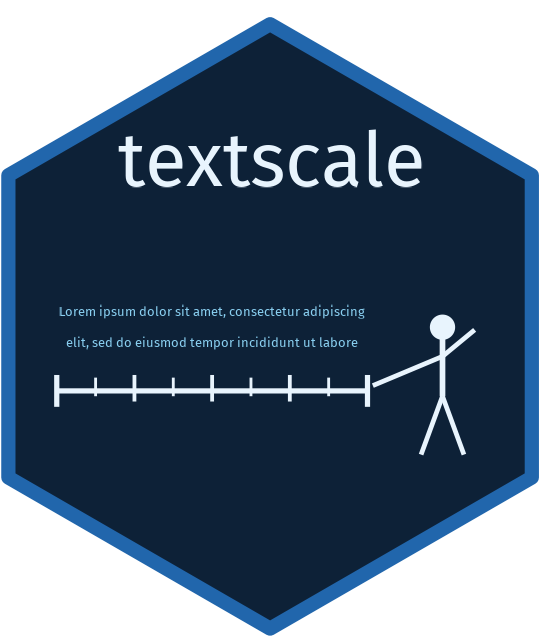

Fit a textscale model
fit_model.RdFits a model on the differences between document embeddings to
identify a latent scaling dimension. The default method is
L2-regularized logistic regression ("ridge"), with alternatives
including "lasso", "enet" (elastic net), and "svm" (linear
support vector machine).
Usage
fit_model(
comparisons,
embeddings,
method = c("ridge", "lasso", "enet", "svm"),
alpha = 0.5,
nlambda = 200,
lambda_min_ratio = 1e-09,
refit = FALSE,
...
)Arguments
- comparisons
An annotated tibble produced by
annotate_comparisons(), containing columnsdoc_id_a,doc_id_b, andwinner.- embeddings
A numeric matrix of document embeddings with one row per document. Row order must correspond to the integer indices in
comparisons(i.e. rowiis the embedding for the document at positioniin the originaldocumentsvector passed togenerate_comparisons()).- method
One of
"ridge"(default),"lasso","enet", or"svm". Controls the fitting method used to identify the latent dimension."ridge","lasso", and"enet"useglmnet::cv.glmnet()with alpha 0, 1, andalpharespectively."svm"fits a linear support vector machine viae1071::svm().- alpha
The elastic net mixing parameter, used only when
method = "enet". Must be between 0 and 1 (0 = ridge, 1 = lasso). Defaults to0.5.- nlambda
Number of lambda values to evaluate during cross-validation. Defaults to
200. Ignored whenmethod = "svm".- lambda_min_ratio
Ratio of the smallest to largest lambda evaluated. Defaults to
1e-9. Increase if you see a warning that the optimal lambda is at the boundary of the search range. Ignored whenmethod = "svm".- refit
Logical. If
TRUE, all comparisons are used for fitting regardless of anysplitcolumn. Use this after validating on a train/test split to produce a final model trained on the full set of annotations before scoring documents. Defaults toFALSE.- ...
Additional arguments passed to
glmnet::cv.glmnet()(for glmnet methods) ore1071::svm()(formethod = "svm").
Value
A textscale_model object (a list) containing:
betaCoefficient vector defining the latent dimension (intercept excluded).
methodThe fitting method used.
lambdaThe selected regularization parameter. Present for glmnet methods only.
cv_fitThe full
glmnet::cv.glmnet()object. Present for glmnet methods only.glmnet_fitThe
glmnet::glmnet()model refit atlambda. Present for glmnet methods only.svm_fitThe
e1071::svm()model object. Present whenmethod = "svm"only.